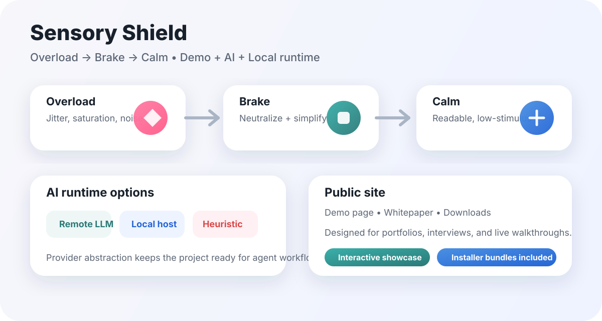

Overload → Brake → Calm
Make overwhelming web pages feel calm, readable, and humane.
Sensory Shield is a browser extension for neurodiverse users. It includes a live demo, AI runtime options, and installer bundles that users can actually use.
- MV3real browser extension
- 3runtime modes
- 1clear product story

Live demo
Interactive contrast demo
Example article
When the feed moves too fast, the brain needs a pause.
Sensory Shield turns messy pages into a readable, quiet, and structured interface so users can grasp the key points faster.
neutral language
bullet summary
low stimulation
Remote LLM
OpenAI-compatible endpoints for cloud-based summarization and rewriting.
Local runtime
localhost models for privacy-first or offline demos.
Heuristic fallback
A simple fallback mode so the demo still works even without an API key.
Downloads
Installer bundles
These are browser-extension bundles, not desktop apps. Download, unpack, and load them in Chrome or Edge.
How it works
Demo + AI + accessibility
- Trigger calm or overload mode from the demo.
- Use the extension to neutralize real pages.
- Pick remote, local, or heuristic AI runtime.